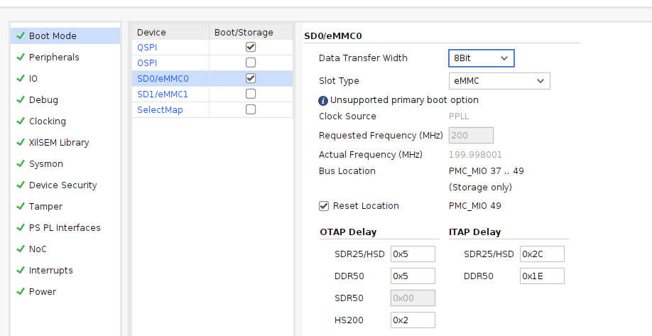
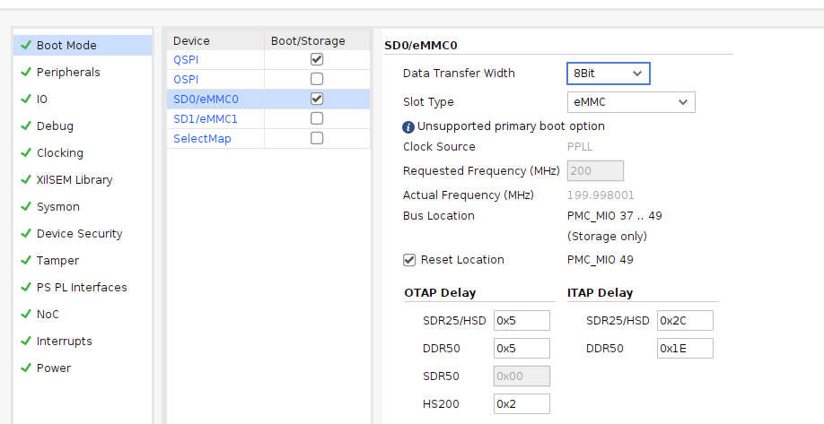
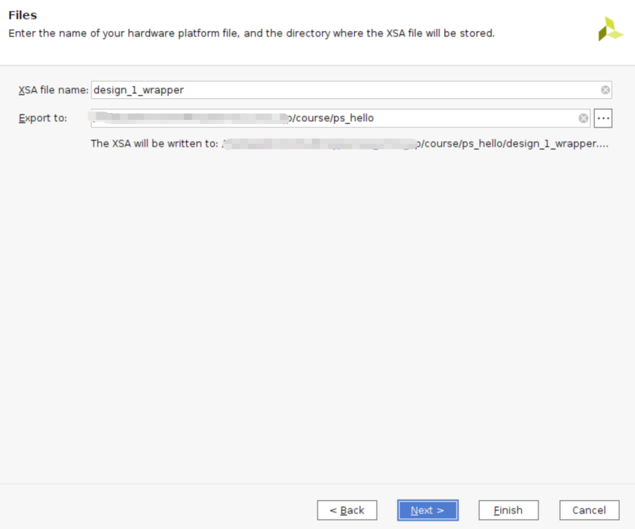
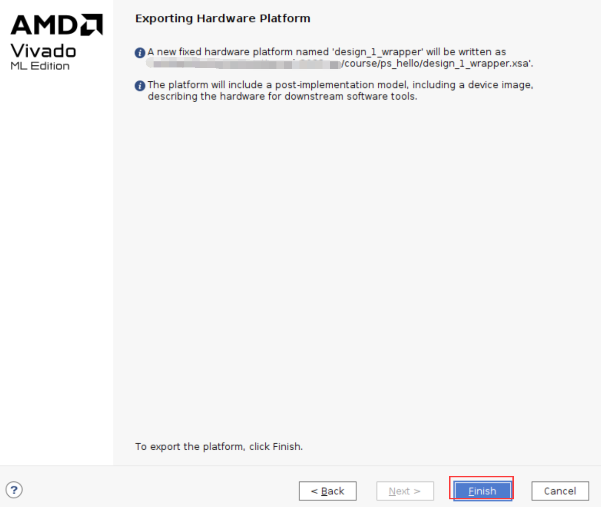
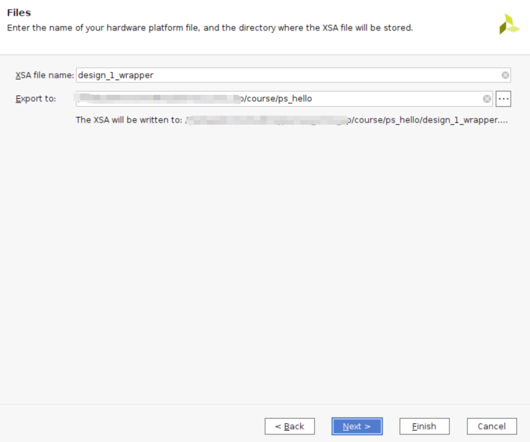
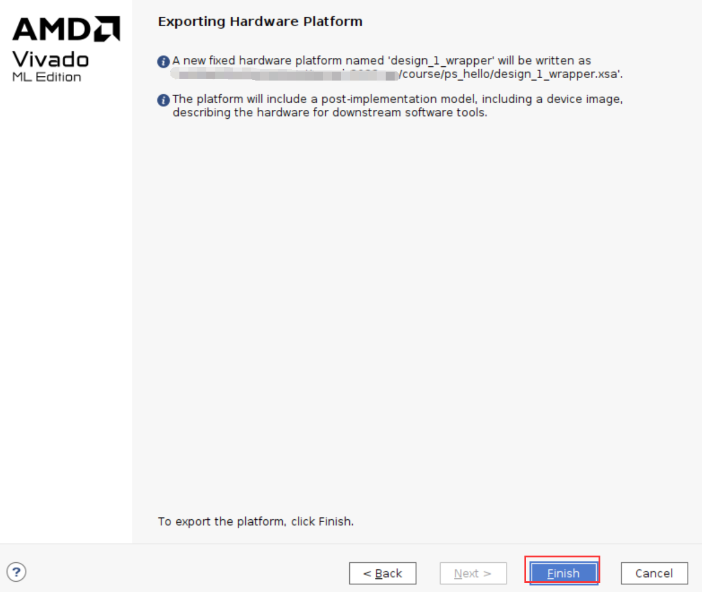

第六章 体验ARM，裸机输出“Hello World”#
从本章开始由FPGA工程师与软件开发工程师协同实现。
前面的实验都是在PL端进行的，可以看到和普通FPGA开发流程没有任何区别，ZYNQ的主要优势就是FPGA和ARM的合理结合，这对开发人员提出了更高的要求。从本章开始，我们开始使用ARM，也就是我们说的PS，本章我们使用一个简单的串口打印来体验一下Vivado Vitis和PS端的特性。
前面的实验都是FPGA工程师应该做的事情，从本章节开始就有了分工，FPGA工程师负责把Vivado工程搭建好，提供好硬件给软件开发人员，软件开发人员便能在这个基础上开发应用程序。做好分工，也有利于项目的推进。如果是软件开发人员想把所有的事情都做了，可能需要花费很多时间和精力去学习FPGA的知识，由软件思维转成硬件思维是个比较痛苦的过程，如果纯粹的学习，又有时间，就另当别论了。专业的人做专业的事，是个很好的选择。
6.1 硬件介绍#
我们从原理图中可以看到Versal芯片分为PL和PS，PS端的IO分配相对是固定的，不能任意分配，而且不需要在Vivado软件里分配管脚，虽然本实验仅仅使用了PS，但是还要建立一个Vivado工程，用来配置PS管脚。虽然PS端的ARM是硬核，但是在Versal当中也要将ARM硬核添加到工程当中才能使用。前面章节介绍的是代码形式的工程，本章开始介绍ZYNQ的图形化方式建立工程。
FPGA工程师工作内容#
下面介绍FPGA工程师负责内容。
6.2 Vivado工程建立#
创建一个名为“ps_hello”的工程，建立过程不再赘述，参考“PL的”Hello World”LED实验”。
点击“Create Block Design”，创建一个Block设计

“Design name”这里不做修改，保持默认“design_1”，这里可以根据需要修改，不过名字要尽量简短，否则在Windows下编译会有问题。

点击“Add IP”快捷图标

搜索“PS”，在搜索结果列表中双击”Control,Interfaces & Processing System”

点击Run Block Automation

配置如下，点击OK

自动连接如下

双击CIPS进行配置


点击PSPMC进行配置

配置QSPI，EMMC，SD
 


选择相应MIO

勾选USB 2.0，GEM0，UART0，TTC，GPIO等外设

配置外设

将MIO24配置成GPIO输入，对应PS端按键，MIO25配置成GPIO输出，对应PS端LED灯


在clocking中，将参考时钟设置更精确些

将内部中断都勾选上，配置完成，点击OK

点击Finish

双击AXI NoC配置DDR4


选择参考时钟和system clock
DDR Address Region 1选择NONE，点击OK

修改引脚名称

双击配置sys_clk的频率为200MHz

选择Block设计，右键“Create HDL Wrapper…”,创建一个Verilog或VHDL文件，为block design生成HDL顶层文件。

保持默认选项，点击“OK”
添加约束

Generate Device Image
完成后取消

File->Export->Export Hardware…


 



此时在工程目录下可以看到xsa文件，这个文件就包含了Vivado硬件设计的信息，可交由软件开发人员使用。

到此为止，FPGA工程师工作告一段落。
软件工程师工作内容#
Vitis工程目录为“ps_hello/vitis”
以下为软件工程师负责内容。
6.3 Vitis调试#
6.3.1 创建Application工程#
新建一个文件夹，将vivado导出的xx.xsa文件拷贝进来。
Vitis是独立的软件，可以双击Vitis软件打开，也可以通过在Vivado软件中选择ToolsLaunch Vitis打开Vitis软件

在欢迎界面，点击Open Workspace，选择之前新建的文件夹，点击”OK”

启动Vitis之后界面如下，点击“Create Platform Component”，这个选项会创建Platfrom工程，Platform工程类似于以前版本的hardware platform，包含了硬件支持的相关文件以及BSP。

第一页填写Component name和路径，保持默认，点击Next

选择(XSA，选择“Browse”，选择之前生成的xsa，点击打开，之后点击Next

选择操作系统和处理器，这里保持默认

点击Finish完成

生成之后出现窗口界面，以下是一些窗口介绍，与之前版本的Vitis界面有相似之处，但差别也比较大。

可以在Flow窗口编译平台
没有错误状态

点击左侧Example，这里面有很多官方的例程，与以前版本也比较类似，选择Hello World

点击创建工程
填写工程名称和路径，保持默认
选中平台

点击Next

完成

选中hello_world，点击Build
6.3.2 下载调试#
连接JTAG线到开发板、UART的USB线到PC

在上电之前最好将开发板的启动模式设置到JTAG模式，拔到”ON”的位置

开发板上电，并且打开串口调试工具，点击Flow中的Run
这个时候观察串口调试工具，即可以看到输出”Hello World”

6.4 固化程序#
普通的FPGA一般是可以从flash启动，或者被动加载，在第一章的PMC架构中已经介绍启动过程，这里不再介绍。
在Flow中选择Creat Boot Image，弹出的窗口中可以看到生成的BIF文件路径，BIF文件是生成BOOT文件的配置文件，还有生成的Output Image文件路径，也就是生成BOOT.pdi文件，它是我们需要的启动文件，可以放到SD卡启动，也可以烧写到QSPI Flash。
在生成的目录下可以找到boot.pdi文件

6.4.1 SD卡启动测试#
格式化SD卡，只能格式化为FAT32格式，其他格式无法启动

放入boot.pdi文件，放在根目录
SD卡插入开发板的SD卡插槽
启动模式调整为SD卡启动
打开串口软件，上电启动，即可看到打印信息，红色框为FSBL启动信息，黄色箭头部分为执行的应用程序helloworld
6.4.2 QSPI启动测试#
在Vitis菜单Vitis -> Program Flash

Image FIle文件选择要烧写的boot.pdi。选择Verify after flash，Flash Type选择qspi-x8-dual_parallel，在烧写完成后校验flash。

点击Program等待烧写完成

设置启动模式为QSPI，再次启动，可以在串口软件里看到与SD同样的启动效果。

6.5 本章小结#
本章从FPGA工程师和软件工程师两者角度出发，介绍了Versal开发的经典流程，FPGA工程师的主要工作是搭建好硬件平台，提供硬件描述文件xsa给软件工程师，软件工程师在此基础上开发应用程序。本章是一个简单的例子介绍了FPGA和软件工程师协同工作，后续还会牵涉到PS与PL之间的联合调试，较为复杂，也是Versal开发的核心部分。
同时也介绍了FSBL，启动文件的制作，SD卡启动方式，QSPI下载及启动方式。